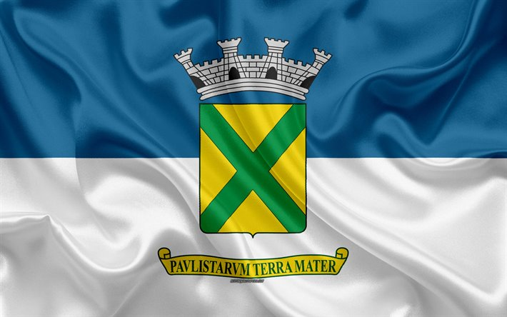

CIDADES e HINOS DE SÃO PAULO
São Paulo é uma das 27 unidades federativas do Brasil. Está situado na Região Sudeste e tem por limites os estados de Minas Gerais a norte e nordeste, Paraná a sul, Rio de Janeiro a leste e Mato Grosso do Sul a oeste, além do Oceano Atlântico
a sudeste.

conheça mais sobre o estado e o seu hino
1 - Cidade de São Bernado do Campo
São Bernardo do Campo é um município brasileiro do estado de São Paulo, na Mesorregião Metropolitana de São Paulo e microrregião de São Paulo.

conheça seu hino
2 - Cidade de Ribeirão preto
Ribeirão Preto é um município brasileiro sede da Região Metropolitana de Ribeirão Preto, no interior do estado de São Paulo, Região Sudeste do país.

conheça seu hino
3 - Cidade de São Caetano do Sul
São Caetano do Sul é um município brasileiro do estado de São Paulo, na mesorregião Metropolitana de São Paulo e microrregião de São Paulo.

conheça seu hino
4 - Cidade de Araraquara
Araraquara é um município no interior do estado de São Paulo, no Brasil. O município é formado pela sede e pelos distritos de Bueno de Andrada e Vila Xavier.

conheça seu hino
5 - Cidade de Santo André
Santo André é um município brasileiro da Região do Grande ABC, localizado na Zona Sudeste da Grande São Paulo.

conheça seu hino
6 - Cidade de Bauru
Bauru é um município brasileiro do interior do estado de São Paulo, sendo o município mais populoso do Centro-Oeste paulista. Pertence à Mesorregião e Microrregião de Bauru, localizando-se a noroeste da capital do estado.
conheça seu hino
7 - Cidade de Diadema
Diadema é um município do estado de São Paulo, na Região Sudeste do Brasil.

conheça seu hino
8 - Cidade de Piracicaba
Piracicaba é um município brasileiro no interior do estado de São Paulo, Região Sudeste do país. É a principal cidade da Aglomeração Urbana de Piracicaba
conheça seu hino
9 - Cidade de Santos
Santos é um município portuário sede da Região Metropolitana da Baixada Santista, localizado no litoral do estado de São Paulo, no Brasil. Com a maior participação econômica da citada região, abriga o maior porto da América Latina

conheça seu hino
10 - Cidade de Maua
Mauá é um município da Região Metropolitana de São Paulo, no estado de São Paulo, no Brasil.

conheça seu hino